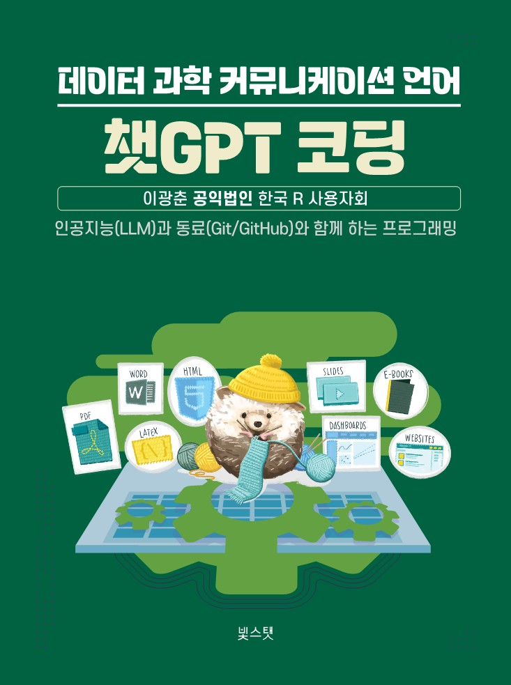

챗GPT 코딩(개정판)
프로그래밍 기초부터 소프트웨어 아키텍처, 그리고 인공지능까지
서문

개정판을 펴내며
프로그래밍을 배우고 싶지만 어디서부터 시작해야 할지 막막하셨나요? 혹은 코딩은 할 줄 알지만, 여러 사람과 협업하거나 큰 시스템을 설계하는 방법은 잘 모르시나요? 인공지능(AI)과 대형 언어 모델(LLM)이 일상화된 지금, 개발자에게 필요한 역량은 무엇일까요?
2024년 초판을 출간한 이후, 많은 독자분들께서 “프로그래밍 기초는 알겠는데, 그다음은 무엇을 배워야 하나요?”라는 질문을 주셨습니다. 실제로 초보자가 전문 개발자로 성장하는 과정에는 단순히 문법을 익히는 것을 넘어, 올바른 설계 원칙을 이해하고, 다양한 프로그래밍 사고방식(패러다임)을 체득하며, AI 시대의 새로운 도구들을 활용하는 능력이 필요합니다.
개정판은 바로 그 질문에 대한 답입니다.
초판에서 다룬 프로그래밍 기초(1-4부)에 더해, 개정판에서는 프로그래밍 패러다임(5부), 소프트웨어 설계와 아키텍처(6부), 기계학습 패러다임(7부)를 새롭게 추가했습니다. 완전 초보자가 첫 변수를 선언하는 순간부터, 대규모 AI 시스템을 설계하고 구축하는 전문가로 성장하는 전 과정을 한 권에 담았습니다.
프로그래밍은 단순히 컴퓨터에게 명령을 내리는 기술이 아닙니다. 문제를 분해하고, 논리적으로 사고하며, 동료와 협업하고, 변화하는 요구사항에 유연하게 대응하는 종합적인 사고 체계입니다. 개정판은 여러분이 단계별로, 그러나 확고하게 그 사고 체계를 내면화하도록 안내합니다.
이 책의 구성
전체 7부로 구성된 이 책은 프로그래밍 입문부터 AI 시스템 구축까지 체계적으로 학습할 수 있도록 설계되었습니다.
1부: 전통 프로그래밍
프로그래밍의 첫걸음입니다. 변수, 조건문, 반복문, 함수 등 모든 프로그래밍 언어의 기반이 되는 핵심 개념을 Python을 통해 배웁니다. “Hello, World!”부터 시작해 실용적인 프로그램을 작성하는 능력을 기릅니다.
2부: 자료구조
데이터를 효율적으로 다루는 방법을 배웁니다. 문자열, 리스트, 딕셔너리부터 데이터프레임, JSON, 텐서, 임베딩, 그래프까지, 현대 데이터 과학과 AI에서 필수적인 자료구조를 폭넓게 다룹니다.
3부: 버전제어와 협업
혼자 코드를 작성하는 단계를 넘어, Git과 GitHub를 활용해 팀원들과 협업하는 방법을 익힙니다. 코드의 변경 이력을 추적하고, 충돌을 해결하며, 효율적인 워크플로우를 구축합니다.
4부: 분야별 코딩
실전에서 자주 마주치는 도구와 기법들을 배웁니다. 정규표현식, 네트워크 프로그래밍, 웹 크롤링, 데이터베이스, 데이터 과학, 자동화, Make를 통해 실무 역량을 강화합니다.
5부: 프로그래밍 패러다임 (개정판 신규)
프로그래밍 사고방식의 지평을 넓힙니다. 명령형, 객체지향, 함수형, 선언형, 반응형 프로그래밍을 이해하면, 상황에 맞는 최적의 코드 작성 방식을 선택할 수 있게 됩니다.
6부: 소프트웨어 설계와 아키텍처 (개정판 신규)
작은 코드 조각을 넘어 큰 시스템을 설계하는 법을 배웁니다. 코드 재사용, 기술 스택 선택, 소프트웨어 아키텍처, 디자인 패턴 등 실무에서 필수적인 설계 원칙과 패턴을 익힙니다.
7부: 기계학습 패러다임 (개정판 신규)
AI 시대의 핵심 기술을 이해합니다. 기계학습의 패러다임, 아키텍처, 워크플로우, 그리고 대형 언어 모델(LLM)까지, AI 시스템을 구축하고 활용하는 방법을 배웁니다.
초판과 개정판의 차이
개정판은 초판의 내용을 전면적으로 확장하고 재구성했습니다.
신규 추가 내용 (5-7부)
초판에서는 프로그래밍 기초부터 분야별 도구까지(1-4부)를 다뤘다면, 개정판에서는 세 개의 새로운 파트를 추가했습니다:
- 5부 프로그래밍 패러다임: 명령형, 객체지향, 함수형, 선언형, 반응형 프로그래밍 사고방식을 체계적으로 학습합니다.
- 6부 소프트웨어 설계와 아키텍처: 코드 재사용 원칙, 기술 스택 이해, 소프트웨어 아키텍처 설계, 디자인 패턴 적용 방법을 다룹니다.
- 7부 기계학습 패러다임: 머신러닝 아키텍처부터 LLM 활용까지, AI 시대의 필수 지식을 제공합니다.
구조 재편
각 장의 절을 5-7개로 통합하여 가독성을 높였고, callout 박스를 적극 활용해 중요 개념과 주의사항을 명확히 표시했습니다. 또한 전체 책에 걸쳐 section label 체계를 도입하여 상호 참조와 색인 기능을 강화했습니다.
개정판 감사의 글
개정판을 완성하는 데 도움을 주신 모든 분들께 감사드립니다.
초판 출간 이후 피드백을 주시고 격려해주신 수많은 독자분들이 있었기에 개정판이 탄생할 수 있었습니다. “다음 단계를 알려주세요”, “실전 프로젝트가 더 필요합니다”, “설계 원칙을 배우고 싶습니다”라는 요청들이 5-7부를 만드는 원동력이 되었습니다.
공익법인 한국 R 사용자회의 형환희 회장님을 비롯한 임원진 여러분, 그리고 서울 R 미트업과 한국 파이썬 커뮤니티에서 꾸준히 지식과 경험을 나눠주신 모든 분들께 깊은 감사를 드립니다.
무엇보다 AI 시대에도 변치 않는 프로그래밍의 본질과 원칙을 가르쳐주신 소프트웨어 카펜트리의 그렉 윌슨 박사님과 Python for Informatics 찰스 세브란스 교수님, 그리고 전 세계 오픈소스 커뮤니티의 기여자분들께 존경과 감사의 마음을 전합니다.
개정판 집필 과정에서 특별히 AI 도구들의 도움이 컸습니다. 클로드는 맞춤법 검사와 윤문, 집필 방향 검토에서 빼놓을 수 없는 조력자였고, 코덱스와 코파일럿은 코드 예제 검증과 최적화에, 제미나이와 ChatGPT는 내용 검토와 독자 관점 피드백에 큰 역할을 했습니다. AI 시대의 저술이 어떤 모습일 수 있는지를 몸소 체험할 수 있었습니다.
개정판이 프로그래밍을 배우는 모든 분들께 든든한 길잡이가 되기를, 그리고 AI 시대의 훌륭한 개발자로 성장하시는 데 도움이 되기를 진심으로 바랍니다.
2026년 2월
이광춘
초판 감사의 글
초판이 탄생할 수 있도록 도움을 주신 여러분께 깊은 감사의 마음을 표합니다.
공익법인 한국 R 사용자회가 없었다면 데이터 과학분야 챗GPT 시리즈가 세상에 나오지 못했을 것입니다. 한국 R 사용자회의 유충현 회장님, 신종화 사무처장님, 홍성학 감사님, 올해부터 새롭게 공익법인 한국 R 사용자를 이끌어주실 형환희 회장님께 감사드립니다.
또한 이 책은 2014년 처음 몸담게 된 소프트웨어 카펜트리 그렉 윌슨 박사님과 Python for Informatics 저자인 미시건 대학 찰스 세브란스 교수님을 비롯한 전세계 수많은 익명의 기여자들의 노력과 지원이 있었고, 서울 R 미트업에서 발표해주시고 참여해주신 수많은 분들이 격려와 영감을 주셨기에 가능했습니다.
이 책이 출간되는데 있어 이들 모든 분들의 도움 없이는 어려웠을 것입니다. 그동안의 관심과 지원에 깊은 감사를 드리며, 이 책이 데이터 과학의 발전과 독자들에게 도움이 될 수 있기를 바라는 마음으로 마무리하겠습니다.
2024년 3월 속초 청초호
이광춘